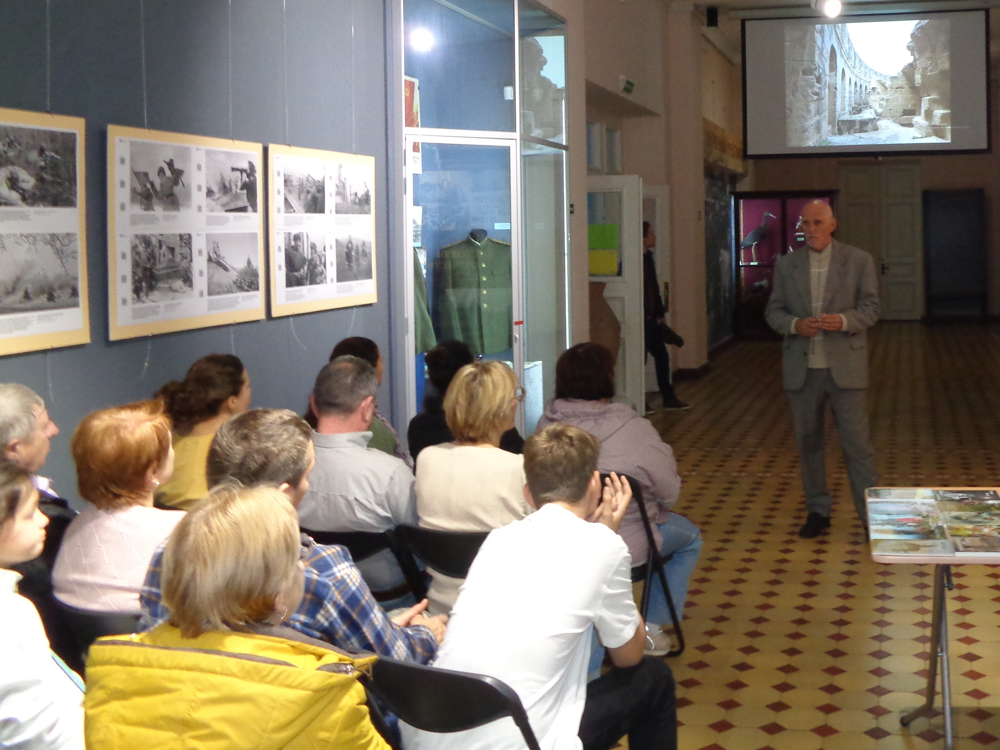

Russian 'Art Night' in Crimea: Wikinews interviews Traveler Viktor Pinchuk
2025, November 9

Russian 'Art Night' in Crimea: Wikinews interviews Traveler Viktor Pinchuk
2025, November 9
Crimea
The annual cultural and educational event, "Night of the Arts," was held on the eve of Russia's National Unity Day, continuing a series of cultural festivals such as "Night at the Museum," "Night at the Theatre," "BiblioNight," and "Night of Music." Wikinews interviewed Crimean explorer and photographer, Viktor Pinchuk, who is currently holding photography exhibitions at the event, centered around one of his greatest passions: traveling, documenting and exploring.Art Night
Q: Where did you participate in the event this year? How was the scale and audience enthusiasm of the 2025 Night of the Arts?
A: This year, I participated in the 2025 Night of the Arts by holding two photo exhibitions in Simferopol on the same day. The first, a digital exhibition, was at the Central Museum of Taurida and featured 310 photographs titled "Unique Objects of Roman-Phoenician Architecture." The second, a smaller exhibition with 20 printed works titled "Vietnam Through the Lens," was held at the Museum of the History of Simferopol. Since the two museums are less than 300 meters apart, I could manage both events in a single day. The audience was very interested and engaged, asking many questions not only about the exhibitions themselves but also about long intercontinental travels in general.
Q: Compared to last year, were there any special differences in the atmosphere, content, audience, or ways of celebrating in 2025?
A: Yes, there were noticeable differences. Due to the complex, almost militarized situation in the country, cultural institutions were prohibited from widely promoting large-scale events. I have participated in five Art Nights, this is unlike previous years, when events could be openly advertised. Despite these restrictions, the audience was enthusiastic and receptive. The atmosphere was more intimate, as visitors approached the exhibitions voluntarily rather than through mass promotion, giving the events a quieter but very genuine engagement.
Q: How did the organizers coordinate with the artists?
A: In my case, the relationship with the museums was complicated. The museums did not take responsibility for inviting visitors, leaving that to the artists or to chance. I was concerned that attendance might be low, but in the end, people did come. This approach required artists to take a more proactive role in presenting their work and connecting with the audience directly.
Q: How were your photo collections created, and did the audience give any interesting feedback?
A: The first collection, "Unique Objects of Roman-Phoenician Architecture," was photographed in Tunisia in May 2025, during visits to five historical and archaeological parks. The second collection, "Vietnam Through the Lens," was shot in February 2020 during a two-week trip to Vietnam, which was limited to 15 days for Russian citizens at that time. The audience showed genuine curiosity and asked many questions about both the technical aspects of photography and the broader experience of travel.
Q: How did you arrange and design these travel photographs into an exhibition? Was there an overall concept?
A: Careful selection of photographic material is essential. Some images may require lightening or cropping to remove distracting elements. In my first exhibition, this was challenging, but now it is manageable. Attention is also given to the artistic component: even when the exhibition is reportage in style, I strive to ensure that each work has an artistic dimension. The overall concept is to present not just images but an experience—each exhibition tells a story, either of architectural heritage or of the cultural landscape of Vietnam, guiding the viewer through the visual journey I experienced during my travels.
Q:What impact has the nearby war had on this event, the artists, and the audience? Could you elaborate? Are you familiar with the situation in eastern Ukraine and near the front lines?
A:What I wrote earlier (the lack of widespread announcement of events involving large gatherings) is simply a precautionary measure, regulated at the state level. No problems have arisen so far. I speak in various cities throughout Crimea and have not seen anything "like this." My knowledge of the political situation (including the military conflict) is limited to the news, meaning accessible sources online.
Based on my personal observation, the majority of people living in Crimea (myself included) are Russian. Consequently, attitudes toward any "Ukrainianism" are universally negative. I am not aware of the situation regarding arts activities in the four eastern provinces and near the front lines. However, we are not experiencing military action; everything is calm. Enemy drones are being shot down by specially trained personnel right now. We will win. No pasaran! (Spanish)
Insights and Experiences from Traveling
Q: Now, let's talk about one of the things you love most: traveling and exploring. The vast majority of people spend their lives in only one or two countries. What made you set out on your first journey and decide to be an explorer for life? Did you ever imagine you would become a traveller?
A: I was born in the Soviet Union and back then I never imagined I would become a genuine traveller, because the country's borders were closed. It was not until 2006 that I truly set out as a "traveller" for Ethiopia. That trip had a clear purpose: I was commissioned by an arts association and planned to hold a photography exhibition upon my return. I never travel without a purpose; each trip is accompanied by a creative project. After the Soviet Union dissolved in 1992 I travelled to many countries as a tourist or with tour groups. But "traveller" and "tourist" are entirely different concepts.
Q: Besides "traveller", the word "explorer" is familiar yet strange — would you call yourself an "explorer"? What, to you, is an explorer?
A: I certainly am an explorer; I try to go to places almost no foreigners set foot in. That said, if I have the opportunity I'll visit some tourist countries on the way.
Q: With rising living standards and technology, travel has become a more mass activity. How do you think travellers can use such activity to broaden their understanding?
A: True travellers never go afar merely for leisure. Those people are called "tourists" or "holidaymakers". This year I gave a talk on this subject at a meeting of Russian travellers in Moscow.
Q: You once said, "Travel is not the same as having a holiday." Could you talk about what you consider "real travel" and "pure exploration"?
A: A holiday is time people spend to rest, relax and be entertained so they can return to work refreshed. Travellers do not relax on the road — it is not easy, and sometimes the psychological strain is heavier than the physical burden. At a seminar in Crimea someone once asked if I would take a companion; when I pressed for details I found he simply planned to use his holiday (at most a month) for the trip, whereas a real journey often lasts half a year — and the matter resolved itself.
Q: Have you ever had an experience of purely relaxing holiday?
A: In childhood I enjoyed leisure and entertainment. I lived on the Black Sea coast of Crimea, not far from Simferopol. As an adult — never; such holidays are too boring.
Q: On the road, have there been times when you felt truly afraid or wanted to give up? How did you get through them?
A: Yes. In the second month of a trip I sometimes experience exhaustion and feel it is difficult to continue; I feel very tired. Then a "second wind" comes and I'm on the road again. There are also moments of not knowing what will happen next — that uncertainty… Once in Bolivia I got lost on a mountain path, had to descend another way, fell and came away bruised. The next day I washed my clothes and continued. That was in Tupiza, a place with many canyons. I've gone through many extreme situations, including infectious disease and being washed into a neighbouring country; experiences and notes on them can be found on the Russian Wikibooks.
Q: You have been to many culturally different regions, including areas that retain much more of a natural way of life — these can surprise visitors accustomed to their own culture. What attitude should a traveller adopt when visiting and observing?
A: I even wrote a little primer specifically on that question; I call it "cultural immersion", which is entirely different from what is commonly meant by cultural travel. I consider myself an expert in this field.
Q: Suppose someone decides to take time off and go on a purely cultural or natural exploration — what practical advice would you give based on your experience?
A: I've been to countries where almost no one speaks English (let alone Russian), such as China and Mongolia, but I still managed to communicate with "body language". I advise people not to be afraid of not knowing the local language and not to fear anything. "Those who want to do something will find a way; those who don't will find an excuse." — Socrates (or some other figure).
Q: How do you keep yourself safe abroad, especially when you need to record and photograph?
A: If someone chooses Ethiopia as the starting point of their travel career, they won't get lost in other countries. Ethiopia is a great "school": locals might throw stones at you for photographing them. I remain tolerant. If I personally dislike certain religions or traditions, I don't tell others, because I am a guest on their land, not the other way around.
Q: You've carried out several projects in Crimea and even received government support. Are there many people engaged in exploration like you? Do you have organisations for communication or cooperation?
A: The government has indeed offered support, but not financial: all projects were completed at my own expense. There are very few people willing to pay all the costs themselves and work without pay. I think these people are mostly concentrated in various Wikimedia projects — for example, writing free articles for Wikinews — which most journalists would not do. Most journalists won't write for free.
Q: You have been to China. What kind of exploration did you do there, and how did you find it?
A: I prefer countries that still retain ancient traditions, even vestiges of medieval life. China is very modernised and prices are not low, especially accommodation (unlike Vietnam or Laos, which are cheaper). As a record-collector I have to say China, Korea and Japan have largely lost ethnic distinctiveness in music. But China has many ancient relics, which is very attractive. I visited an "ethnic village" in China, but it was only a tourist attraction, not authentic. I also visited Hong Kong and Taiwan; their atmospheres differ from that of the Chinese mainland.
Q: How do you document each trip? Do you value preserving images, text, or memory itself? How do you turn travels into art or academic works?
A: On the last day of a six-month trip I was robbed in broad daylight in the city centre and all my recorded material was gone. I always only start organising my writing after returning home, and experience cannot be stolen. So I eventually published a book without illustrations. Photographs are mainly used to accompany books and news articles, or to stage a photography exhibition.
Q: You are over fifty. Do you plan to undertake more of these crazy intercontinental trips? Have you felt any ageing-related hindrances, and how do you maintain your mental and physical condition?
A: I live in Europe and the destinations I choose are usually in Africa, Asia, Oceania and Latin America, so every journey is intercontinental. I walk 8.5 kilometres every Monday. On the road I can walk up to 20 kilometres a day. If I walk 30 kilometres I feel very tired; I simply can't go on beyond 30 kilometres in a day.
Q: Some say growing up is a form of cultural travel. You were born in Soviet Ukraine and lived through changing times — how did your childhood and youth in the Soviet Union influence you?
A: I'm glad the borders opened and we gained freedom of movement. Some people don't realise that freedom, or they simply don't need it. I wrote a short essay on this called "Learned helplessness of long-distance travel". As for me personally, I was born in Crimea. That region was at the time transferred to the Ukrainian Soviet Socialist Republic without the consent of the population.
Q: Looking back at your youthful experiences abroad, how have time and developments such as technology changed the travel experience itself?
A: I didn't travel in my youth because the borders were closed. Of course I did visit places such as Moscow, Leningrad and Tallinn, but Soviet cities resembled one another. In my childhood the word "tourist" was often illustrated by a person in trainers with a rucksack climbing a mountain. Today the same word more often conjures another picture: someone on a beach wearing sunglasses, lying on a deck chair under a palm tree, with turquoise sea nearby. Everything flows, everything changes. (Victor's quotes.)
Q: Many people are stuck in jobs and need a thorough rest during their holidays. For those who can't travel far but need relaxation and a sense of meaning, what would you suggest?
A: Those people are not free; I don't really want to talk about them. They say they "can't" go abroad, but in fact they simply don't want to.
Q: World Tourism Day this year hasn't been over for very long. How do you think commercial tourism can be connected with exploratory travel?
A: They have nothing to do with each other, nor is there any need to link them. There's a Russian proverb: don't compare God's gift to a fried egg.
Q: Have you encountered legal or judicial problems while traveling? How did you handle them?
A: I was expelled from Fiji. To get to Vanuatu, Tonga or Samoa one must often transit through Fiji. The fourth time I returned to Fiji I had no onward ticket. I had intended to try to apply for an Australian visa in Suva, but I was detained at the airport. After being "detained" (in practice kept in a hotel) for two weeks I was deported back to Moscow via Singapore, even though there were four three-month Fiji visas in my passport. I also wrote a book about that trip, Two Months of Wandering and Fourteen Days Behind Bars.
Q: Are the scarcely visited and described-as-"primitive" regions always dangerous in your view?
A: No — on the contrary, those places are not dangerous. I was robbed in a big city centre (an African-style robbery), in full view of dozens of passers-by who were not surprised; they were used to it. That happened in Johannesburg, a city with a high Human Development Index. Someone had warned me I would be robbed there in public and I thought it was an exaggeration. A Chinese translation of a newspaper article about that incident can be found on Wikisource.
Another dangerous place is the big cities of Papua New Guinea. The reason is that local people are very poor while prices are extremely high. They may take knives to the street to get food in order to survive. Small villages are safer.
Q: When you encounter sharp cultural clashes or misunderstandings, how do you usually handle them? Any memorable experiences?
A: I always adapt to local realities, and for that reason I have rarely had conflicts. I wrote an online textbook on cultural travel.
Q: Long journeys with creative purpose are full of uncertainty — how do you adjust your mindset, especially when coping with setbacks?
A: Indeed, travel often brings unplanned situations. For example, on my most recent African trip I planned to go to Niger, Nigeria and Algeria but did not succeed. There is an old saying: "Hope for the best, prepare for the worst." I even obtained a visa and paid for Gambia, but in the end I did not go because of lack of time. Online you can find project files for my international "Maghreb+" project (files 4, 5 and 6 concern Gambia, Senegal and Niger respectively).
Q: Taking a few photos and jotting down notes is not hard, but how do you produce long travelogues or systematic works?
A: I never write anything while travelling. In the early 2000s I used to travel with film cameras (Zenit, FED, etc.) and trips were short enough that I could barely organise the material. But if a trip lasts half a year and involves ten or more countries you cannot do without digital cameras. I always mark the location, time and content of photos in a notebook. Back home I then reorder events chronologically. That is the only method; there is no alternative.
Q: Are there tools, simple tricks or methods you use on the road that you find particularly useful for travel and creation?
A: I use techniques from my own manual "Hobo Tourism" (that's a literal Russian title and is difficult to translate). The most interesting part describes seemingly extreme lodging methods: graveyards, public toilets, police stations, etc. This manual is important to me; much of my exploratory activity is founded on it. There is also an English translation.
Q: Do you encourage more people to go and research scarcely visited regions?
A: No — everyone should do what they are good at and interested in. Dropping everything to copy me is wrong. I wrote a psychological essay, "Learned helplessness of long-distance travel", about the mindset of people born in the Soviet Union; this may be hard for foreigners to understand.
I've also written a new article about my ideas for the "photography exhibition of the future". By the way, I am the author of a textbook that lists almost every school, style and direction of photographic art. Nowadays most readers dislike long texts, so it is full of illustrations — all of them my own works for interested readers to explore further.
Q: Anything else you'd like to say?
A: I'm not prepared at the moment. Improvisation is impossible; it requires careful thought.